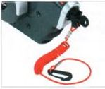
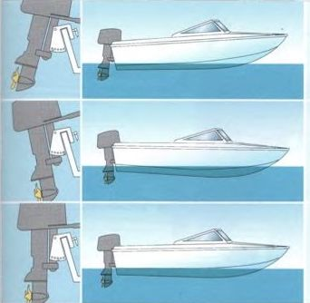

Der Außenborder ist der einzig mögliche Antneb für alle Rle'neren Soortboote Bis zu etwa S m lange. Sein günstiges leislungs-qewicht (kg: kW/P$) wird von keinem Ein-baumoto'auch nur annähernd erreicht. Wird em Bootstyp für Innen- oder Au Benborder angeboten, wird man mit einem leistungsschwacheren Außenborder schneller und wirtschaftlicher fahren Außenborder gibt es von 1,5 bis 410 kW (2 bis 557 PS), die kleineren Motoren mit Handstarter, die größeren mit Elektrostarter.
Den Motor so am Spiegel montieren, dass sich die Kavitationsplane uve- dem Propeller etwas unterhalb des Bootsbodens befindet Dadurch vermeidet man, dass der Propeller zu leicht lüft bekommt. Keinesfalls darf die •avitationsolatte hoher als der Boden '.le gen. Nicht nur, dass de' Propeller dann zu leicht Luft ansaugen wurde, auch die Xuhl-wasserpumpe konnte Luft schnappen, und de- Motor wurde überhitzt.
Die Kippvorrichtung unterhalb des Kippbu-gels sperren, sonst schlagt der Schaft beim Anreißen des Starterseils oder beim Achter -ausfahrenhocb.
Da kleinere Au Benborder mancnmal bei eingekuppeltem Propeller keine Sperre haben, beim Starten unbedingt darau’ achten, dass das Betriebe auf leerlauf (neutral) steht Das Kühlwasser kontrollieren, das in dünnem Strahl am Schaft austntt.
Vorn Hochkippen und Stauen des Außenborders die ßenzinleitung abnehmen und den
Motorwanne
Handtfartet
Motorhaube
Schalthebel
Kö Nwawau Mntt
Treibvlof Schlauchkupplung
Klemmschrauben
K.ppbupd
Trxnmlöcher
CXa Wawchraube
Cühiwawercntnfl
Olkontrolhcbraube
Steuersp^ine Choke
Propelle«
Sporn
Auvpv” Tnrnrrflowe
LStoppuha Xer D-ehgasgn W
Kavi Uttoreplat W
Motor so lange laufen lassen, bis er aostirbi. Dann sind Vergaser und Schwimmerkammer leer. So tropft kein Benzin aus dem Vergase-ins Wasser oder Boot.
Bei Transport und Lagerung des Außenborders darf der Kopf nie tiefer liegen als der Schaft. Sonst kennte restliches Kuhlwasset In den Zylinder laufen und dort erhebliche Schaden verursachen.
Qaickstopp -in Mu« für jeden Au8enboictr<äh-re’- Angeklippt verbindet er Verseh und Schaltkasten oder Motor. Beim Stur? (ucer Sord) «Wd ck Zündung unterbrechen, una der Motor kommt »fort zum St'THUrt
Off richtige Anstellaiakel <«s MMorc
Der Motor !S1 tu stark abgekippt Das Heck •ird ins Wasstr gedruckt, der Bug noch Ein Te'.lde Propellern hutu ts! in »ich'unq Grund gerichtet. Au Betde n mrd d» fahrverhalten unsicher.
Drr Motorschatt ist nr star» an den Spiegel geholt. Das Heck wird angehoven, der Bug ms Wasser gedruckt t n Teil des Prcpeletschubs nchtet sich wkungstos gegen den S«ts-b Oden. Das Boot kann in einer Wette unter-schneiden und volllaufen.
Der op ti nute Anstellwinkel bei Gleitfahrt.
Der Propeller kann seine gante k'att in Vor-nsscbu B verwandeln Das Bo« Hegt anna hernd Stan auf dem Wasser und erreicht so die höchste Geschwindigkeit bei geringstem Verbrauch
«rt Sen Tritrmlochetn (3 bis 5) in dem $eq-
- 'f am Kippbügel ässt s ch der Arstelwir • >•' des Außenocraeischaftes verändern lr eusssoargestellt «erden, dass er bei Lieit-*irt im rechten Winkel im Wasser steht N ur « kann der Propelle' seine Schubkraft voll »cwitkein. Weist wird man das IM .'Wüten loch von unten erreichen Oie optimale Einteilung wird hauttg auch in der Betriebs-* niung des Motors genannt, doch kann ] se natürlich nicht fu- jedes Boot mit untet-I »friedlicher Belastung optimal sein.
Wird der Motor zu wert vom Spiegel abgekippt. wird das Heck zu ne’ Ins Wasser gedruckt. Dadurch vergrößert sich die sogenannte benetzte Oberfläche, und das erhöht den Retbungsmderstand im Wasser. Das kann einen Mehrverbrauch an Benzin bis zu 12% ausmachen.
Annhch negativ ist der Effekt, wenn der Motorschaft zu dicht an den Spiegel herangeholt mrd. Dann verzehrt der Propeller einen Teil seiner Schubkraft, um das Boot hinten anzuheben, wahrend es mit dem Bug durchs Wasser pflügt.
Nun kann man aber diese Trimm-Moglich-keiten, die der Außenborder bietet, durchaus auch positiv einsetzen Hat man beispielsweise schwere lasten - etwa mehrere Treib-sto’fkamster - hinten im Boot, littet der an den Spiegel getrimmte Motorschaft das tiefer eingetauchte Heck so weit, dass das Boot wiede' eine waagerechte Scnwimmlage einnimmt.
Umgekehrtes gilt für schwere Gewichte im Bug - etwa e n voller Einbaulank. Durch den starker angekippten Motor wird cer Bug in die Horizontale hochgetnmmt.

